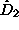
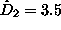
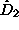
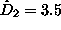

A few programs in the package directly issue scalar quantities that can be used
in nonlinearity testing. These are the zeroth order nonlinear predictors (predict and zeroth) which implement Eq.(5) and the time
reversibility statistic (3). For a
couple of other quantities, we have deliberately omitted a black box algorithm
to turn the raw results into a single number. A typical example are the
programs for dimension estimation (d2,
c2naive, and
c1) which compute correlation sums for ranges of length scales  and
embedding dimensions m. For dimension estimation, these curves have to be
interpreted with due care to establish scaling behaviour and convergence with
increasing m. Single numbers issued by black box routines have lead to too
many spurious results in the literature. Researchers often forget that such
numbers are not interpretable as fractal dimensions at all but only useful for
comparison and classification. Without genuine scaling at small length scales,
a data set that gives
and
embedding dimensions m. For dimension estimation, these curves have to be
interpreted with due care to establish scaling behaviour and convergence with
increasing m. Single numbers issued by black box routines have lead to too
many spurious results in the literature. Researchers often forget that such
numbers are not interpretable as fractal dimensions at all but only useful for
comparison and classification. Without genuine scaling at small length scales,
a data set that gives  by some ad hoc method to estimate
 cannot be said to have more degrees of freedom, or be more
``complex'' than one that yields .
by some ad hoc method to estimate
 cannot be said to have more degrees of freedom, or be more
``complex'' than one that yields .
This said, users are welcome to write their own code to turn correlation integrals, local slopes (c2d), Takens' estimator (c2t), or Gaussian Kernel correlation integrals (c2g) into nonlinearity measures. The same situation is found for Lyapunov exponents (lyap_k, lyap_r), entropies (boxcount) and other quantities. Since all of these have already been described in Ref. [9], we refer the reader there for further details.